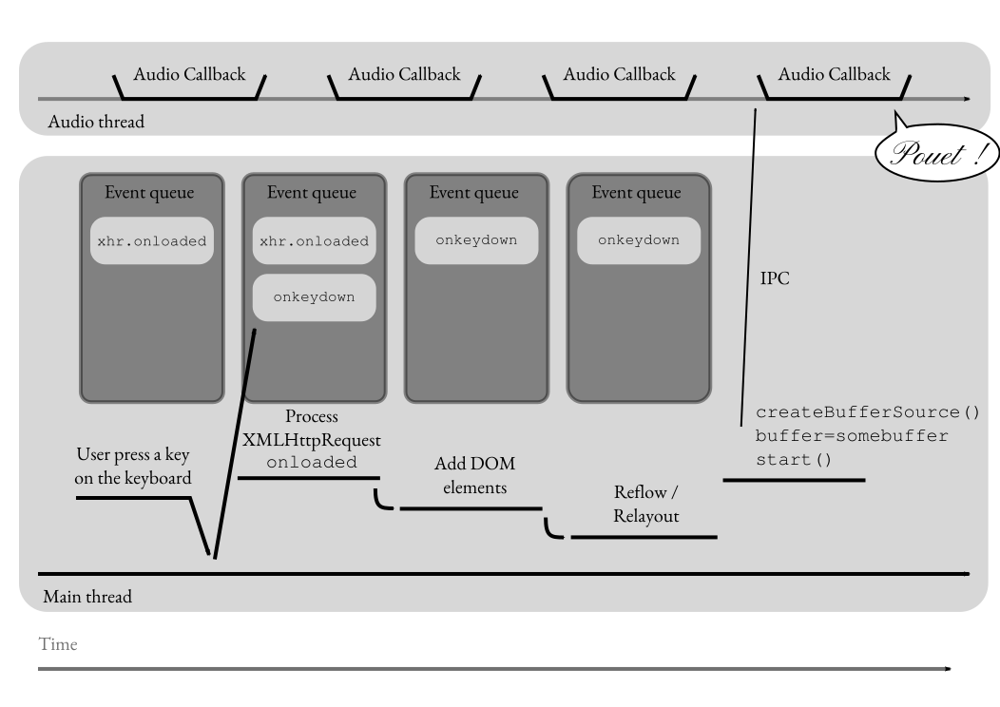
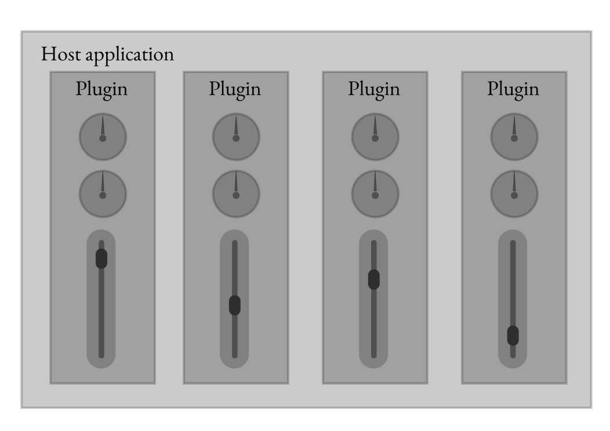

class: center, middle # Web Audio API _vs_ native: _closing the gap_ Paul Adenot, Mozilla Corporation Web Audio Conference ~ IRCAM January 27<sup>th</sup> 2015 --- class: center, middle <style scoped> span#phonic { font-family: monospace; font-style: italic; font-weight: 500; } #a { font-weight: normal; font-size: 1.0em; } #b { font-weight: bold; font-size: 1.1em; } #bb { font-weight: bolder; font-size: 1.2em; } </style> # `padenot`: (<span id=phonic>padəno</span>): <br> # music <span id=a>maker</span> <span id=b>maker</span> <span id=bb>maker</span> --- # State of the world, 2015 <div id="chart"></div> --- class: center, middle # So… This talks assumes we already have the `AudioWorker` in browsers, i.e., we can run JavaScript code in the audio callbacks, without audio breakups, with nice latency. <span style="color:#aaa"> Otherwise I would already be done with it… </span> [`AudioWorkerNode` specification text](http://webaudio.github.io/web-audio-api/#idl-def-AudioWorkerNode) --- # Agenda for today <br> <br> <style scoped> span.center { display: block; margin: 0 auto; font-family: 'Pinyon Script', cursive; font-size: 2em !important; } span.rightright { text-align: right; border-right: 0.3em solid rgba(0, 0, 0, 0.3); padding-right: 1em; margin-bottom: 0.2em; display: block; font-size: 1.5em; } </style> - Things we can do today on the Web, and things we will be able to do tomorrow… <span class="center">vs.</span> <span class=rightright>…constraints the Web platform sets are are (seemingly) not solvable</span> --- class: center, middle # Performance <br> # Latency <br> # Ecosystem --- class: center, middle # Performance --- # Native audio programmer bag of tricks to speed up things <br> - Optimize for CPU cache efficiency - Zero-copy cross-thread buffer transfer - Pool allocations/reduce allocator churn - SIMD - Lock-free/wait-free programming --- # CPU cache efficiency in JavaScript - `ArrayBuffer`s are linear in memory, are very prone to cache-related speedups/slowdowns - Never use regular `var array = [];` for data (audio) buffers - Prefer sequential access, refactor buffer accesses to avoid touching a lot of memory, etc., classic advices also apply in JavaScript --- # Zero-copy cross-thread buffer transfer - `transferable` interface for some JavaScript object (including `Float32Array`) - _neuters_ the array on the sender side: `.length` becomes `0` - Works in normal `WebWorker`s, `AudioWorker`s --- # Maximising JavaScript processing speed Options available to you today to speed up your Web Audio API application: <br> <br> - [`asm.js`](http://asmjs.org/spec/latest/) <br> - [`SIMD.js`](https://hacks.mozilla.org/2014/10/introducing-simd-js/) --- # `asm.js` & - « _an extraordinarily optimizable, low-level subset of JavaScript_ » - No garbage collection (because no `malloc`) - Up to 1.5x the speed of C++ code (`gcc -O2`) in JavaScript - *Straightforward* to port C/C++ - `AudioWorker` ♥ `asm.js` --- # `SIMD.js` - A little [demo](http://peterjensen.github.io/mandelbrot/js/mandelbrot-ww-asm.html) from Intel - Looks like regular SIMD intrinsics, familiar: ```js if (window.SIMD) { // yay, SIMD available, let's do a little stereo mixdown routine for (var i = 0; i < bufsize; i+=4) { var lhs = SIMD.float32x4(left[i+0], left[i+1], left[i+2], left[i+3]), rhs = SIMD.float32x4(right[i+0], right[i+1], right[i+2], right[i+3]); var mixdown = SIMD.float32x4.add(lhs, rhs); SIMD.float32x4.store(center, i, mixdown); } } ``` - Support not _completely_ done accross architectures and browsers --- # Denormals <div class=leftleft> One-pole high-pass filter: <pre> <strong>float</strong> last_out = <strong>0</strong>, last_in = x; <strong>for</strong> (<strong>uint32_t</strong> i = <strong>0</strong>; i < len; i++) { out[i] = last_out * <strong>0.995</strong> + in[i] - last_in; last_out = out[i]; last_in = in[i]; } </pre> 100x slowdown when <code>in</code> is mostly zeros. </div> <div class=leftleft> Native solution: FTZ, flush denormals to zero: <pre>_MM_SET_DENORMALS_ZERO_MODE(_MM_DENORMALS_ZERO_ON);</pre> </div> <div class=leftleft> JS solution: <code> += Math.random()</code> ? ☹ <a href="https://mail.mozilla.org/pipermail/es-discuss/2014-July/038335.html">thread on <code>es-discuss</code></a> ? </div> --- # Lock-Free/Wait-Free <br> - Browsers only use message passing, no memory sharing _for now_ - Sharing read-only buffers is useful - There is a proposal for shared memory, atomics and locks coming up ([here](https://docs.google.com/a/mozilla.com/document/d/1NDGA_gZJ7M7w1Bh8S0AoDyEqwDdRh4uSoTPSNn77PFk/edit#)) - This is scary --- # Alternative data types/quality - Lower sample rate, on the fly resampling ? - PCM 16bits instead of floats ? - [DPCM](http://www.bitsnbites.eu/?p=170) (non-linear quantization) ? --- class: center, middle # Latency --- # Main thread load  --- # Native audio stack, basic setup --- # Native audio stack, better setup ??? ASIO / WASAPI exclusive --- # Browser audio stack: sandboxing ??? No system calls allowed in the sandboxed process, need to forward the audio --- # Thread priority demotion with `AudioWorker` <style scoped> blockquote { font-size: 1.35em; } #bigbig { position: fixed; top: 0%; left: 0%; opacity: 0.3; font-size: 10em; } .right { text-align: right; font-size: 2em; font-style: italic; } </style> <span id=bigbig>«</span> > Nota bene _that if the Web Audio implementation normally runs audio processing at > higher than normal thread priority, utilizing <code>AudioWorkerNode</code>s may cause > a demotion of the priority of the audio thread (since user scripts cannot be run > with higher than normal priority)_. <div class=right>— Web Audio API specification</div> --- class: center, middle # Ecosystem --- # Distribution - _Independant_ vendor, _untrusted_ code - VST, AU, Max/Pd externals? Need some sort of sandboxing - In{put,let}s and out{put,let}s sets - Parameters - Max/Pd patches, need serialization primitives --- # Emulating the « VST » model on the Web  ??? - An « host » loads « plugins » - Can't give a `document` to the « plugin » (= module) - Can't even give a element to draw the UI in (`.parentElement`, etc.) - Don't want to use `{Web,Audio}Worker` (because native nodes) - element to draw in because `.parentElement` - `<iframe>` ? --- # ES6 `Proxy` to the rescue ! <style scoped> pre, pre code { font-size: 1.6em; background-color: rgba(0,0,0,0.1); } pre { margin-top: 1.5em; } </style> ```js var ac = new AudioContext(), console = console, whitelist = { audiocontext: ac, console: console }; var scope = new Proxy({}, { has: function () { return true; }, get: function (target, name) { return name == "whitelist" ? whitelist : undefined; } }); ``` ??? Of course we would also wrap the AudioContext, left as an exercise for the listener, to prevent expando leakage --- # A good use for `with` <style scoped> pre, pre code { font-size: 1.6em; background-color: rgba(0,0,0,0.1); } </style> <br> ```js (function () { with (scope) { (function (that) { "use strict"; var console = that.console, ac = that.audiocontext; (function () { var s = ac.createBufferSource(); console.log(document, window, this, s); })(); }).call(this, whitelist); } }).call(scope); ``` --- class: center, middle <style scoped> h1 { font-weight: 500; font-size: 7em; } </style> # _Questions?_ --- class: center, middle <style scoped> h1 { font-weight: 500; } </style> <h1 class="cursive">Fin.</h1> <code><padenot@mozilla.com></code> <br> <code>@[padenot](https://twitter.com/padenot)</code> <br> <a href="https://padenot.github.io/wac-14-keynode"><code>http://padenot.github.io/wac-14-keynote</code></a> <br> <br> <img src=img/by.svg style="height: 1.5em">